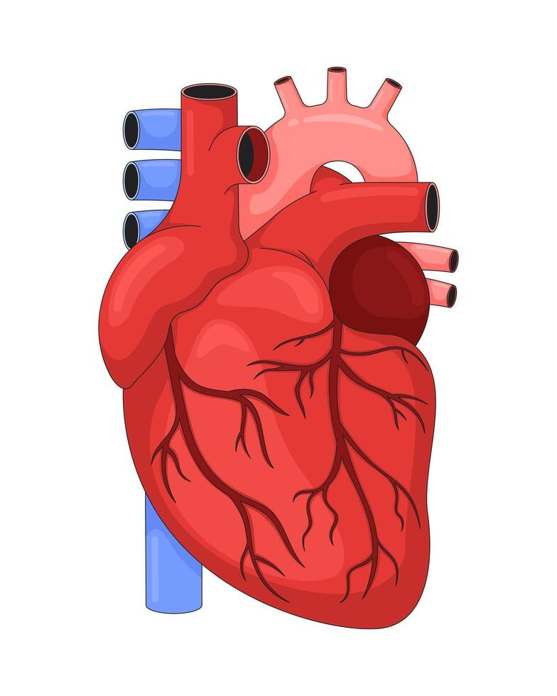

Explore Anatomy Beyond the Textbook.
Point your phone at a printed heart diagram and watch a 3D heart appear. Turn it, tap each structure and learn what it does.
Educational use only. Not a medical tool and not a substitute for professional training or validated anatomical references.

How it works
Scan
Open the AR scanner and point your camera at the printed AnatoAR heart marker.
Explore
A 3D heart appears on the marker. Drag to rotate it a full 360° and pinch to zoom.
Learn
Tap any structure to read its location and function, then mark it as learned.
Explore the Human Heart
This is the standard 3D demo: no camera needed. For real AR, print the marker and open the AR scanner.
Drag to rotate, pinch or use +/− to zoom, tap a red hotspot or a part of the heart. This is a simplified, original model and is not anatomically exact.
Help & marker
1. Print the marker
Download heart-marker.jpg and print it on plain paper, about A5 or larger. This exact image is the one the tracker was built from. Don't crop or edit it.

2. Scan it
- Open the AR scanner and press Start AR.
- Allow the camera when your browser asks.
- Hold the phone 20 to 40 cm from the paper so the whole marker is in view.
The camera is used only to find the marker. Nothing is recorded or uploaded.
If tracking fails
- Use bright, even light and avoid glare on the paper.
- Keep the paper flat and the whole marker visible.
- Move slowly and try a slightly different distance.
- Print larger or on matt paper if a screen shows reflections.
No camera or no marker?
Use the 3D demo. It shows the same heart, hotspots and information cards without a camera.
Why camera permission?
AR needs a live camera view to recognise the marker. The page works on localhost or HTTPS only.